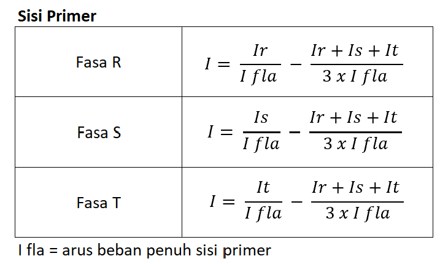
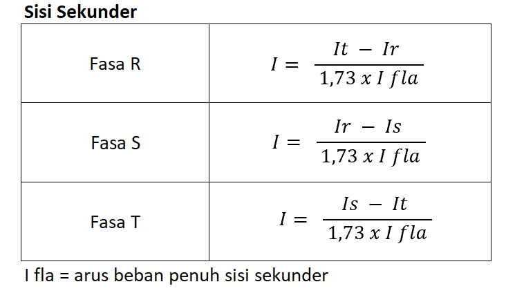
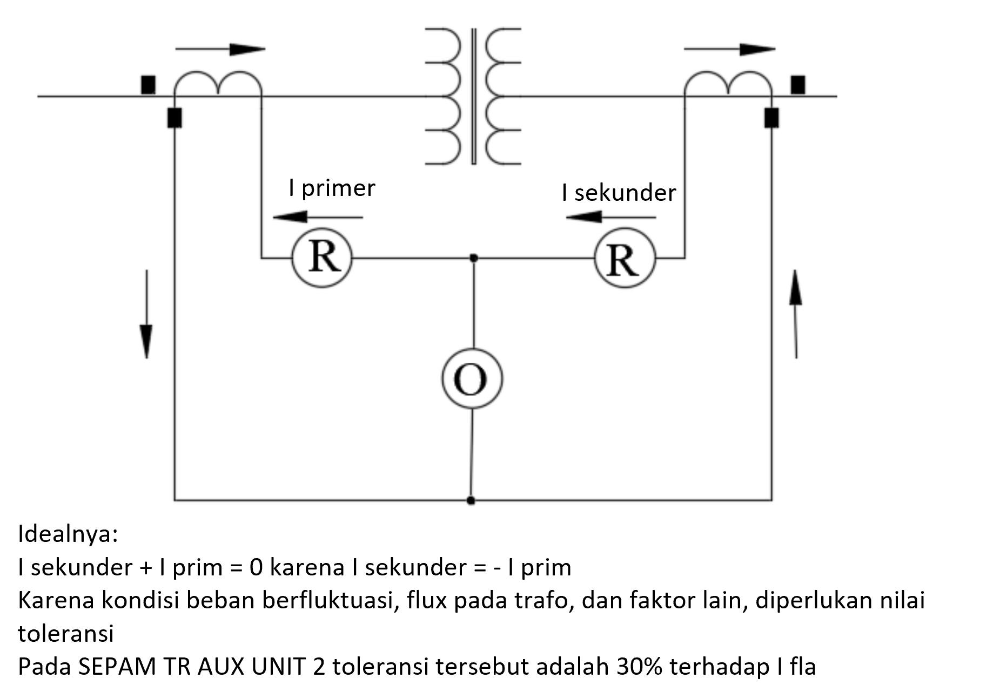
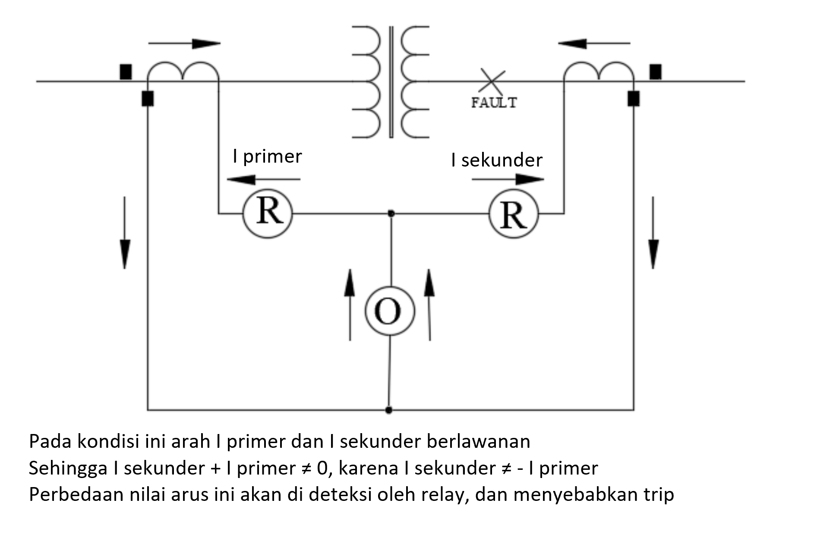

MIND ID - ANTAM UBPNS
Arus yang masuk ke 1 titik = arus yang keluar dari titik tersebut
Ia = Ib, Ia - Ib = 0
Pada trafo, arus sisi primer tentu berbeda dengan sisi sekunder karena tegangannya berbeda
Untuk memenuhi hukum kirchoff, dilakukan konversi arus dari satuan Ampere ke satuan Per Unit atau pu
Konversi Sisi Primer
Konversi Sisi Sekunder
Kondisi Normal
Kondisi Fault
